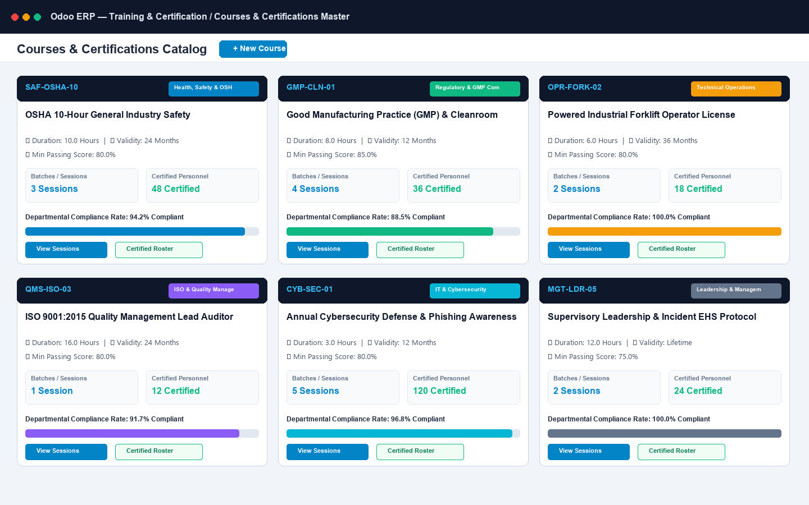
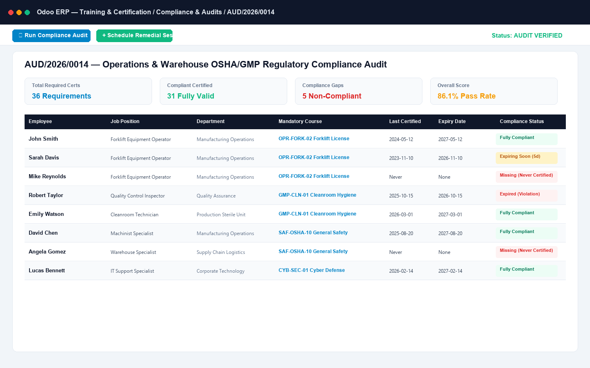
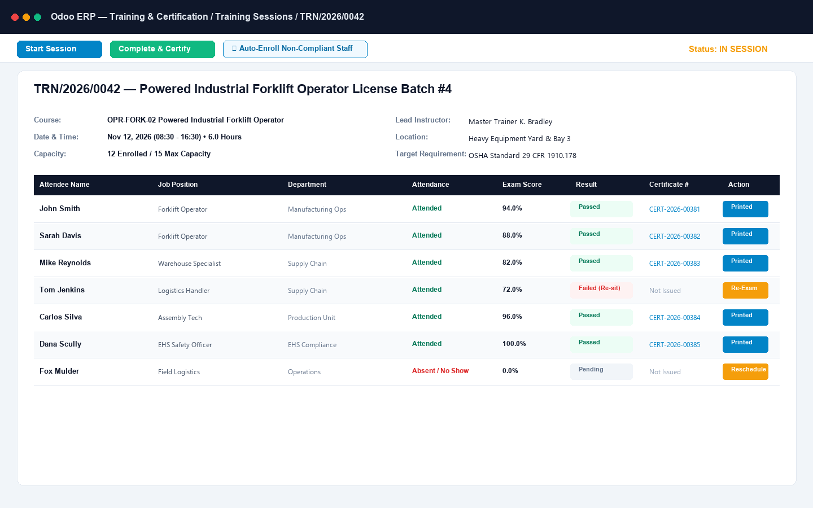
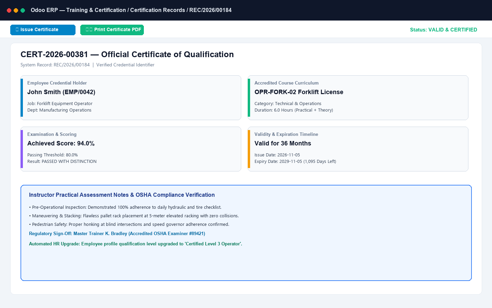
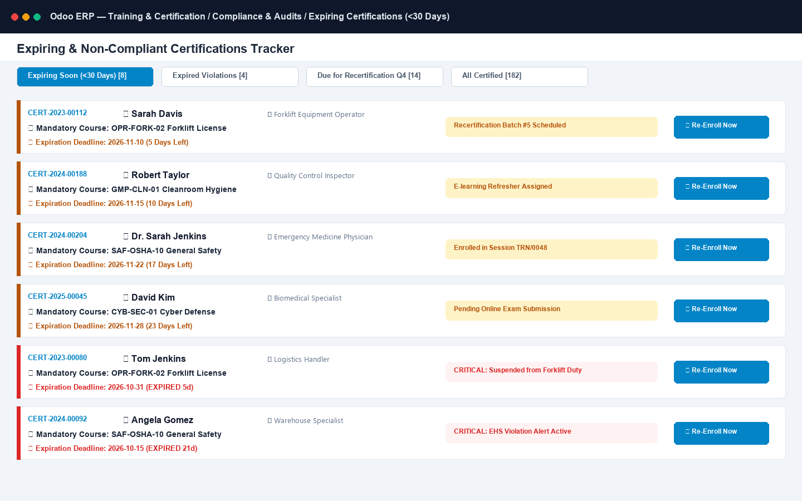
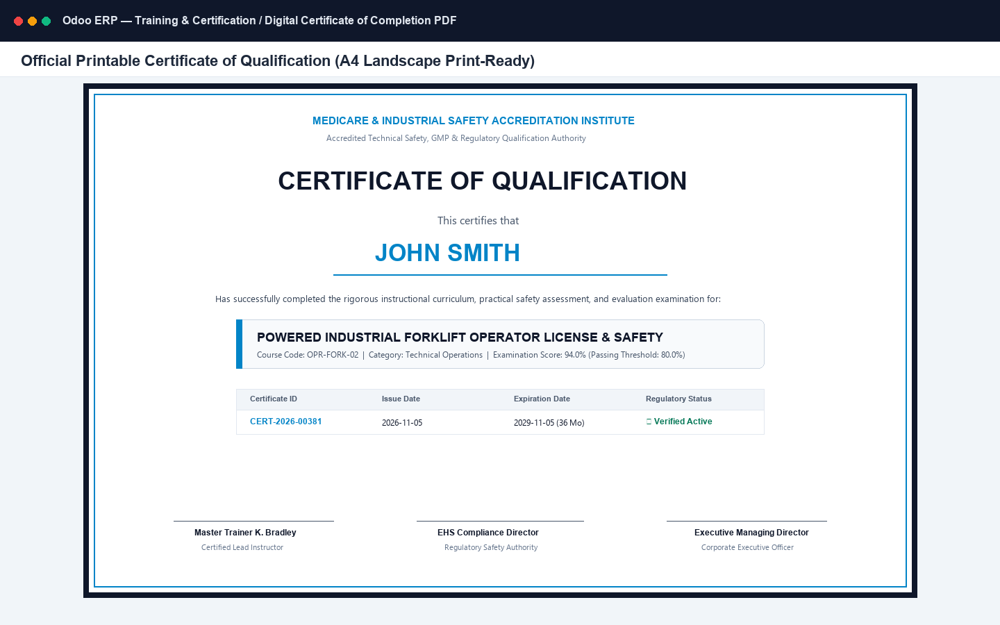

Comprehensive employee qualification tracking, mandatory job-role compliance matrices, batch training session logistics, automated exam grading, renewal expiration alerts & tamper-evident digital PDF certificates.
Built specifically to solve ISO 9001, OSHA, GMP, and corporate compliance audit gaps without complex third-party LMS software
Assign mandatory qualification courses to specific Job Positions and Departments. Instant department gap audit scans non-compliant, missing, and expired certifications.
Manage scheduled batches with capacity caps, internal or external trainers, and venue tracking. Automatically enroll all employees lacking current certifications with a single click.
Track attendee presence, practical scores, and written exam percentages. Automated logic compares scores against required course benchmarks to qualify or fail candidates.
Automated daily background cron tracks validity duration (e.g. 12, 24, 36 months), flags expiring credentials within 30 days, and instantly updates employee compliance statuses.
Generate audit dossiers per department or plant. Real-time KPI percentage indicates overall compliance rate with detailed breakdown of qualified, expired, and non-certified personnel.
Automatic sequential certificate numbers (CERT-YYYY-XXXXX) with unique verification security hash, accreditation logos, and 3 signatory authorization blocks.
Engineered with modern UX principles for HR Compliance Officers, Safety Auditors, and Training Directors
Comprehensive course directory organized by category (OSHA, GMP, Quality, Cyber, Leadership). Features passing score benchmarks, certificate validity durations, and assigned mandatory job positions.

Automated compliance audit engine scanning active employees across departments. Highlights verified compliant staff, missing mandatory certifications, and overdue renewals with an overall compliance percentage KPI.

Manage training sessions with start/end schedules, venue/classroom allocation, trainer details, and capacity monitoring. Click Auto-Enroll Mandatory Staff to immediately populate non-compliant personnel.

Track session participants, mark presence status, input examination test scores, and let the system automatically compute passing results, issue certificate numbers, and record expiry dates.

Centralized dashboard tracking active, expiring soon (<30 days), and expired credentials. Enables proactive renewal scheduling before regulatory compliance audits and safety inspections.

Official printable Certificate of Qualification featuring employee name, course accreditation, passing grade, unique verification code, issue/expiry dates, and triple signatory endorsement.

Follow this end-to-end testing workflow to evaluate all core features right after installation
Navigate to Training > Courses. Notice pre-loaded industry standard courses: OSHA 10-Hour General Industry, GMP Cleanroom Operations, Forklift Safety & Operation, ISO 9001 Lead Internal Auditor, and Annual Cybersecurity Awareness. Open any course to review passing score benchmarks, certificate validity duration, and assigned mandatory job positions.
Navigate to Training > Sessions > New. Select a course (e.g. OSHA 10-Hour), set dates, venue, and max capacity. Click Confirm Session, then click Auto-Enroll Mandatory Staff. Notice how the system automatically scans all employees whose Job Position mandates this course and adds them as attendees.
Click Start Session. On the Attendees notebook tab, mark attendance status as Attended and enter test scores (e.g. 88% and 65%). Notice that attendees reaching the course passing benchmark (e.g. 80%) automatically qualify as Passed, while lower scores are marked Failed.
Click Complete Session. Observe that unique sequential certificate numbers (CERT-YYYY-XXXXX) and cryptographic verification hashes are automatically generated for all passed candidates. Expiration dates are calculated based on the course validity duration.
Navigate to Training > Compliance Audits > New. Select a department (e.g. Manufacturing or Operations) and click Scan Compliance Gaps. Review the real-time Compliance Rate KPI and inspect the audit lines categorizing personnel as Compliant, Expired, or Non-Certified.
Open Employees and select a certified employee. Observe the Certifications smart button displaying the count of valid credentials. Click the smart button to view the certification history, validity dates, and days remaining before expiration.
From any passed participation record or employee certifications view, click Print Certificate (or select Print > Certificate of Qualification). Inspect the landscape A4 executive PDF: corporate header, candidate name, score, unique certificate number, verification hash code, and triple signatory endorsement blocks.
| Capability | Standard Odoo / Generic LMS | Training & Certification Hub |
|---|---|---|
| Mandatory Job Role Mapping | Manual Spreadsheet / None | Native Job Position & Dept Rules |
| 1-Click Auto-Enrollment | Manual Employee-by-Employee | Automatic Non-Compliant Staff Enroll |
| Department Compliance Gap Matrix | Not Available | Instant Audit Scan & Compliance KPI % |
| Automated Expiry Recertification Cron | Manual Tracking / Forgotten | Daily Automated Validity & Warning Cron |
| Digital Certificate PDF with Verification Hash | Requires 3rd-party Canva/Photoshop | Landscape A4 PDF with Verification Hash |
| Multi-Company Isolation & Security Rules | Basic | Full Enterprise Record Rules & ACLs |
Our certified Odoo engineers offer free installation support, version upgrades, and custom compliance workflows.